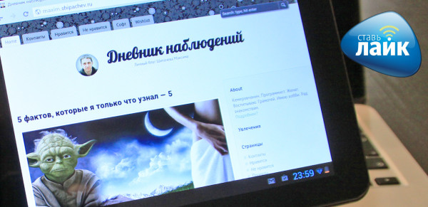

Канули в Лету времена, когда в Кемерове был только один провайдер. Научно-технический прогресс и жажда прибыли делают своё белое дело. Провайдеров развелось — тьма. В каждом доме, в каждом подъезде идёт сегодня борьба за клиента. Вот ты сейчас читаешь эти строки, а борьба идёт. Где-то с помощью подъездных табличек, где-то с помощью продавцов-консультантов, где-то с помощью файловых архивов, где-то с обещаниями высоких скоростей, способов много.
Проверить свою скорость подключения можно здесь
Со скоростями случай, конечно, отдельный. Гонка скоростей, сильно напоминает мне гонку мегапикселей в цифровых фотоаппаратах. Падкие до цифр покупатели становятся часто жертвами рекламы и там, и там. Как в фотоаппарате, главное не мегапиксели, а физический размер матрицы и качество оптики, так и в доступе интернет, важна не максимально возможная скорость, а гарантированные мегабиты в секунду, да отзывчивая поддержка.
Компания «Сибирские Сети», подозреваю, пришла в Кемерово одной из последних. Рынок к тому времени уже был сильно поделен, и приход на него нового провайдера может и был закономерен в плане развития компании, но, конечно, рискован.
Своей фишкой компания «Сибирские Сети» выбрала, что приятно, не мегапиксели. Компания пришла на рынок со своим новым продуктом — «Лайк». А «Лайк», в понимании «Сибирских Сетей», это отсутствие проблем у клиента.
Лайк — это квартира без проводов
Во-первых, продукты «Лайк» — беспроводные. Но это только начало. Компания по сути уходит о продажи доступа в интернет и делает упор на сервис и среду. Выбирая «Лайк», клиент получает не просто полный комплект для построения беспроводной сети в квартире. Клиент получает бесплатную настроенную беспроводную сеть, включающую гостевой доступ, настройку всех устройств, гарантию и бесплатную замену оборудования и цифровое телевидение. В случае каких-то проблем, обещают в компании, тебе не нужно будет разбираться в настройках роутера, создании подключения по VPN или в необходимости DHCP сервера. «Сибирские сети» разумно считают выгодным, чтобы у клиента всё работало всегда, и решат любые твои проблемы самостоятельно.
С компанией я познакомился на презентации продукта «Лайк», которая проходила в июне этого года, а в сентябре мне позвонили вновь и предложили поучаствовать в тестировании нового для «Сибирских Сетей» продукта. Теперь компания не просто создаёт интернет в вашей квартире. «Сибирские сети» делают упор на обеспечение тебя протестированным на совместимость и полностью настроенным оборудованием. Для теста мне дали 7-дюймовый планшет Лайк Мини, который по сути является настроенным под провайдера планшетом Prestigio Multipad. Кроме обычных для планшетов на Андроиде приложений на планшет установлено IP TV «Сибирских Сетей». С его помощью телевидение становится доступным в любой точки вашей квартиры (всё-таки не рекомендую пользоваться планшетом в душе).
Я не любитель планшетов, поэтому перечислю примечательные характеристики: встроенная память — 4Гб, 2-ядерный процессор, 3G, конечно, нет. Стоимость 3699 рублей, что, ниже цены в ДНС почти на 500 рублей. По скорости работы планшет вполне конкурирует с купленным за 20 тыщ когда-то Гэлэкси Табом, проигрывает, правда, по качеству изображения, но однозначно выигрывает по цене. Планшет поставляется с вполне удобным чехлом и, уверен, придётся под душе и кошельку и детям, и взрослым. Дочка смотрит на нём мультики, например.

Кроме планшетов в линейке продуктов «Лайк» компания уже предлагает телевизоры, и, кажется что-то новенькое, беспроводные принтеры. Напоминаю, что весь головняк по настройке всего этого хозяйства «Сибирские Сети» берут на себя.
Не могу не упомянуть и про возможность получить всякого добра от «Сибирских Сетей» бесплатно. С 1 октября до 31 декабря ты можешь рекомендовать «Лайк» своим друзьям и знакомым. Как только 10 твоих друзей или знакомых попользуются «Лайком» 1 месяц, можешь забирать свой планшет, комплект для подключения или беспроводной принтер в офисе компании. Нет, не благодари. Нет, я не участвую в акции, планшет у меня уже есть.
В целом, уверен, что стратегия «лишать клиента проблем и забот» кажется в современных условиях современной и единственно правильной.